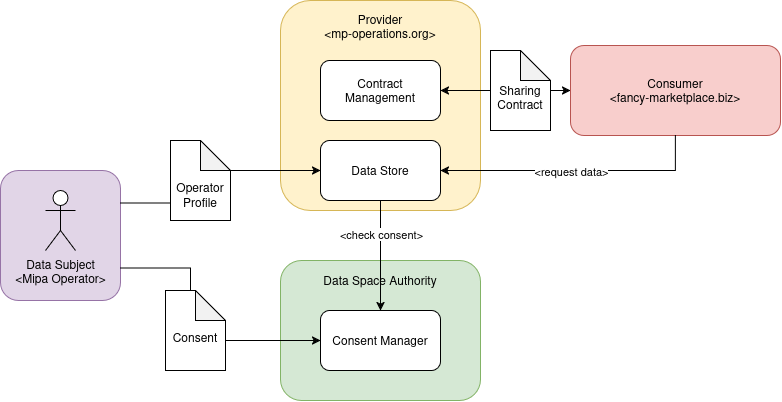
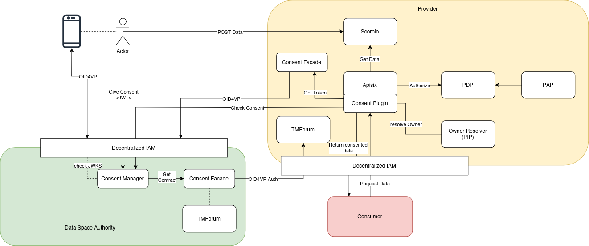
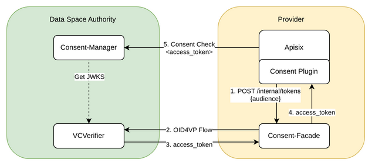

Consent Management¶
Some data spaces share personal data - data that belongs to a person rather than to the organization storing it. Where that happens, regulation such as the GDPR wants that person to decide who gets the data, and everybody involved to be able to prove afterwards what was decided. The Data Space Connector can deploy an optional consent-management layer that does exactly this: the person grants or withdraws consent at a neutral authority, receives a signed receipt for every decision, and the data provider refuses to hand out the data while no consent is in force.
The layer is optional and off by default. A data space that shares no personal data needs none of it.
Why consent management¶
Sharing personal data between organizations widens what a data space can do, but it has to comply with regulations such as the GDPR and standards such as ISO/IEC TS 27560 for recording a data subject's consent.
The example used throughout this document: mp-operations.org stores the educational history of its
registered operators, so that consumers can judge the level of service to expect. Parts of that data
are personal and belong to the operator, not to mp-operations.org. They may only be shared with
another organization - say the consumer fancy-marketplace.biz - when the person they are about
explicitly agrees.

Consent management gives the data space four properties it does not have otherwise:
- Data subjects are first-class citizens. They are identified by their own DID across all participants, and grant or revoke consent themselves - not through the organization holding their data.
- The record is kept by a neutral party. The
Data Space Authoritystores consents independently of data holders and consumers, so neither side can quietly change what was agreed. - Providers check consent on every request that touches personal data, not once at onboarding.
- Every decision is provable. Consent decisions are signed and the data accesses can be logged.
In short:
"Mipa Operator" hands its "OperatorProfile" to
mp-operations.org.mp-operations.organdfancy-marketplace.bizagree on a contract giving the consumer access to "OperatorProfile" entries. From that contract, the authority derives a privacy notice - plain text saying what would be shared, with whom and why - and "Mipa Operator" grants consent to it. Only from that moment does a request byfancy-marketplace.bizreturn the profile, and only until "Mipa Operator" revokes.
How it works¶
The four parties¶
| party | in the example | what it does |
|---|---|---|
| data subject | "Mipa Operator" | the person the data is about; holds a wallet, is identified by a DID, grants and revokes consent |
| data provider | mp-operations.org |
stores the personal data and must check consent before answering any request for it |
| data consumer | fancy-marketplace.biz |
wants the data; its request is denied unless the subject consented |
| data space authority | dataspace-authority.org |
runs the consent-manager, the neutral book of record, and the identity service that issues the access tokens for it |
The life of a consent¶
- Both organizations register at the authority as participants, each proving who it is with a verifiable credential. → Participants and data subjects
- The data subject registers itself once with its own credential, and the provider links the subject to itself as one of its data subjects.
- The two organizations conclude a contract - it names the two parties, the data it covers, and the purpose the data may be processed for. → Declaring the processing purpose
- The provider turns that contract into a privacy notice at the authority: one call, and the authority reads the contract, the catalog and the purpose, and produces the notice the subject will decide on. → Privacy notices
- The data subject decides. It grants - or refuses - consent for that notice, and can ask for a signed receipt of the decision at any time. → Granting, checking and revoking
- The consumer requests the data. The provider's gateway authorizes the request in the connectors standard way, fetches the data - and then, before the answer leaves the provider, finds out whom the data belongs to and asks the authority whether that person consented to this provider sharing it with this consumer. Only then is the data returned. → Enforcement: the consent-filter plugin
- The subject revokes whenever it wants. The very next request is denied again - no contract has to be renegotiated for that.
Step 6 is what makes this more than bookkeeping: the check happens per request and per data subject in the response, not once per consumer.
The words used here¶
| term | meaning |
|---|---|
| participant | an organization registered at the consent-manager, identified by its ID |
| data subject | the person a record is about, identified via an ID derived from verifiable credentials |
| agreement / contract | the TM Forum agreement between two participants: what is shared, under which policy, for which purpose |
| privacy notice | generated from one agreement; the "what, by whom, to whom, for which purpose" that the subject actually decides on |
| consent | one subject's decision on one privacy notice: granted, refused, revoked or terminated |
| receipt | a signed, independently verifiable record of a decision (ISO/IEC 29184 or Kantara) |
| purpose | why the data is processed; a legal declaration of the provider, carried on the product specification |
| self-description | the public document describing a participant, served by the authority - and the name a contract uses for its parties |
What runs where¶
Consent management spans the authority and each provider that serves personal data. The authority runs the consent-manager, while providers only run the enforcement side.

At the authority:
| component | what it is for |
|---|---|
| consent-manager | the book of record: participants, data subjects, privacy notices, consents; signs receipts; validates the token on every call itself |
| consent-facade (authority) | translates the providers' TM Forum data into the contracts the consent-manager derives notices from, and publishes the participants' self-descriptions |
| IAM (keycloak issuer + VCVerifier) | turns a presented credential into an access token for the consent-manager |
| gateway (APISIX) + PostgreSQL | publishes the API and the public key set; stores the records |
At the provider:
| component | what it is for |
|---|---|
| consent-filter plugin | sits on the APISIX route and holds the response back until consent is confirmed |
| consent-owner-resolver | tells the plugin, from the response data, whether consent is needed and whose data it is - provider-specific, because only the provider knows its own data model |
| consent-facade (provider) | mints the plugin's access token at the authority and serves the provider's contracts to the resolver; never published |
Two different ways of acting for the provider are worth keeping apart. Its organizational
actions - registering as a participant, generating a privacy notice, ending a consent - are done by
a person or a backend presenting the organization's MembershipCredential from a wallet, typically
through a portal the authority offers. Only the plugin uses the machine path: it holds no
credential of its own, so it asks its local consent-facade, which presents that same
MembershipCredential to the authority's verifier and caches the resulting token. Both end up as
the same kind of token for the same participant; the difference is who is driving.

Details: Authentication and roles, The provider's token service, and Deployment for the charts and values. The design decisions behind the integration are recorded as ADRs, currently ADR 0008; an existing installation of the older consent-manager is upgraded as described in Migrating from the Prometheus-X consent-manager.
Walkthrough: consent in the local k3s scenario¶
The fastest way to understand the feature is to watch it work. This walkthrough plays the whole story on a local k3s data space: a data subject publishes personal data at the provider, the consumer is denied, the subject grants consent, the consumer gets the data, the subject revokes, and the consumer is denied again.
| step | what happens | who acts |
|---|---|---|
| 1 | the provider allows reading the data type at all, as it would for any data | provider |
| 2 | the subject's profile is stored at the provider, marked as belonging to the subject | data subject |
| 3 | the consumer asks for the profile and is refused - nobody consented yet | consumer |
| 4 | provider and consumer register at the authority, each with its membership credential | both organizations |
| 5 | the two agree on a contract covering the profile, for a declared purpose | both organizations |
| 6 | the subject registers, the provider links it, and the contract becomes a privacy notice | subject + provider |
| 7 | the subject grants consent; the same request now returns the data; a signed receipt is issued | data subject |
| 8 | the subject revokes; the next request is refused again | data subject |
Steps 1-3 set the stage and show the default: without consent, nothing flows. Steps 4-6 build what a consent needs to exist at all. Steps 7 and 8 are consent management proper.
Bringing the data space up¶
This deploys the standard local data space plus the consent overlays.
Warning
A local bring-up with consent management is resource-hungry; the ≥24 GB of the local deployment requirements apply.
Preparing a wallet and some shell variables¶
Run everything below from the repository root. All public hostnames of the local data space resolve
inside the cluster only, so every call goes through the squid proxy on localhost:8888.
First create the holder identity in cert/ and issue its credentials, as in the
local deployment guide. In this
scenario that one identity plays two roles: it is the data subject (through its
UserCredential) and the consumer's employee (through its MembershipCredential).
export KUBECONFIG=$(pwd)/target/k3s.yaml
mkdir -p cert && chmod o+rw cert
docker run -v $(pwd)/cert:/cert quay.io/wi_stefan/did-helper:0.1.1
sudo chmod -R o+rw cert/private-key.pem # demo only
export SUBJECT_DID=$(jq -r '.id' cert/did.json)
export USER_CREDENTIAL=$(./doc/scripts/get_credential.sh https://keycloak-consumer.127.0.0.1.nip.io user-credential employee)
export MEMBERSHIP_CREDENTIAL=$(./doc/scripts/get_credential.sh https://keycloak-consumer.127.0.0.1.nip.io membership-credential employee)
export CM=https://consent-manager.dataspace-authority.org/v1
export TMF=https://tm-forum-api.127.0.0.1.nip.io/tmf-api
export PROVIDER_DID=did:web:mp-operations.org
export CONSUMER_DID=did:web:fancy-marketplace.biz
The provider acts in its own name too - registering, generating notices, ending consents. Those are
organizational actions: in a real data space a person at the provider does them in the authority's
portal, or a provider backend does them, authenticating with the organization's
MembershipCredential from its wallet. So the walkthrough obtains the provider's token the same way
the consumer does: by presenting a credential to the authority's verifier.
export PROVIDER_CREDENTIAL=$(kubectl -n provider get secret vc-fdsc-edc-credential \
-o jsonpath='{.data.credential}' | base64 -d)
export PROVIDER_TOKEN=$(./doc/scripts/get_access_token_oid4vp.sh \
https://verifier.dataspace-authority.org/services/consent-manager $PROVIDER_CREDENTIAL participant); echo "Provider Token: ${PROVIDER_TOKEN}"
The presentation is signed with the cert/ key rather than a key of the provider's, which the
verifier accepts because this credential is not holder-bound - see
Known limitations. What the consent-manager reads from the token is the
credential's issuer, did:web:mp-operations.org, so the token speaks for the provider either
way.
Step 1: allow the read at OPA¶
Consent is an additional gate, not a replacement for the normal authorization. So the provider
first publishes an ordinary ODRL policy that lets any credential holder read OperatorProfile
entities. The policy says nothing about consent - it only gets the request past OPA and to the
consent plugin, which then decides.
curl -k -x localhost:8888 -s -X POST https://pap-provider.127.0.0.1.nip.io/policy \
-H 'Content-Type: application/json' \
-d '{
"@context": { "odrl": "http://www.w3.org/ns/odrl/2/" },
"@id": "https://mp-operation.org/policy/common/operatorProfileRead",
"odrl:uid": "https://mp-operation.org/policy/common/operatorProfileRead",
"@type": "odrl:Policy",
"odrl:permission": {
"odrl:assigner": { "@id": "https://www.mp-operation.org/" },
"odrl:target": {
"@type": "odrl:AssetCollection",
"odrl:source": "urn:asset",
"odrl:refinement": [
{ "@type": "odrl:Constraint", "odrl:leftOperand": "ngsi-ld:entityType", "odrl:operator": { "@id": "odrl:eq" }, "odrl:rightOperand": "OperatorProfile" }
]
},
"odrl:assignee": { "@id": "vc:any" },
"odrl:action": { "@id": "odrl:read" }
}
}'
Step 2: the subject publishes its data¶
The data has to say whom it belongs to. The entity carries the subject's DID in its dataOwner
property; that is what the owner-resolver will read later. Consent is therefore bound to the owner
of the data, never to whoever happens to ask for it.
!bulb! The concept of owner-resolver is extendable. If the data of a concrete use-case carries its owner information differently or can be resolved in another way, the owner-resolver interface can be implemented to support that format.
export ENTITY_ID=urn:ngsi-ld:OperatorProfile:mipa
curl -k -x localhost:8888 -s -X POST https://scorpio-provider.127.0.0.1.nip.io/ngsi-ld/v1/entities \
-H 'Content-Type: application/json' \
-d "{ \"id\": \"${ENTITY_ID}\", \"type\": \"OperatorProfile\",
\"dataOwner\": { \"type\": \"Property\", \"value\": \"${SUBJECT_DID}\" },
\"email\": { \"type\": \"Property\", \"value\": \"mipa@example.org\" } }"
Step 3: the consumer asks for the data and is denied¶
This is the default state. The consumer presents a perfectly valid credential, OPA allows the read,
context-broker returns the profile - and the plugin stops it on the way out, because no consent exists.
Getting a 403 here is the point of the step.
read_profile() {
ACCESS_TOKEN=$(./doc/scripts/get_access_token_oid4vp.sh https://mp-data-service.127.0.0.1.nip.io $USER_CREDENTIAL default)
curl -k -x localhost:8888 -s -o /dev/null -w 'HTTP %{http_code}\n' \
"https://mp-data-service-consent.127.0.0.1.nip.io/ngsi-ld/v1/entities/${ENTITY_ID}" \
-H 'Accept: application/json' -H "Authorization: Bearer ${ACCESS_TOKEN}"
}
read_profile # -> HTTP 403, from the plugin, not from OPA
Step 4: both organizations register at the authority¶
A consent names two organizations, so the authority has to know both of them. Each registers itself, authenticated with its own membership credential - the authority takes the participant's identity from the token, never from the request body.
Registration points at a self-description: the public document describing the organization,
served by the authority's consent-facade and projected from a TM Forum organization that carries the
participant's DID. So the organizations are created in TM Forum first. The org helper finds an
organization by name and creates it only when missing, so re-running the walkthrough keeps the same
self-descriptions:
org() {
id=$(curl -k -x localhost:8888 -s "$TMF/party/v4/organization?limit=1000" \
| jq -r --arg n "$1" 'map(select(.name == $n))[0].id // empty')
[ -n "$id" ] && { echo "$id"; return; }
curl -k -x localhost:8888 -s -X POST $TMF/party/v4/organization -H 'Content-Type: application/json' \
-d "{\"name\":\"$1\",\"tradingName\":\"$1\",\"isLegalEntity\":true,\"organizationType\":\"company\",
\"contactMedium\":[{\"characteristic\":{\"country\":\"DE\"}}],
\"partyCharacteristic\":[{\"name\":\"did\",\"value\":\"$2\"}]}" | jq -r .id
}
export PROVIDER_ORG=$(org "M&P Operations" $PROVIDER_DID)
export CONSUMER_ORG=$(org "Fancy Marketplace" $CONSUMER_DID)
# the self-descriptions: what the registration records, and what the agreement names its parties by
export PROVIDER_SD=https://consent-facade.dataspace-authority.org/participants/${PROVIDER_ORG}
export CONSUMER_SD=https://consent-facade.dataspace-authority.org/participants/${CONSUMER_ORG}
Now each side registers itself, each presenting its own membership credential - no organization can register another:
export CONSUMER_TOKEN=$(./doc/scripts/get_access_token_oid4vp.sh \
https://verifier.dataspace-authority.org/services/consent-manager $MEMBERSHIP_CREDENTIAL participant); echo "Consumer Token: ${CONSUMER_TOKEN}"
curl -k -x localhost:8888 -s -X POST $CM/participants -H "Authorization: Bearer ${PROVIDER_TOKEN}" \
-H 'Content-Type: application/json' \
-d "{\"legalName\":\"M&P Operations Inc.\",\"email\":\"provider@mp-operation.org\",
\"selfDescriptionUri\":\"${PROVIDER_SD}\"}"
curl -k -x localhost:8888 -s -X POST $CM/participants -H "Authorization: Bearer ${CONSUMER_TOKEN}" \
-H 'Content-Type: application/json' \
-d "{\"legalName\":\"Fancy Marketplace Co.\",\"email\":\"consumer@fancy-marketplace.biz\",
\"selfDescriptionUri\":\"${CONSUMER_SD}\"}"
On a re-run POST /v1/participants answers 409 - also expected; an existing registration is
updated with PUT /v1/participants/me.
The same thing, the way the plugin does it. On every gated request the consent-filter plugin makes two lookups - who am I, and is the consumer a known participant. The plugin has no wallet, so it asks the provider-local consent-facade for a token instead (token service); that machine path exists for the plugin alone, everything else in this walkthrough acts with a credential. The facade is deliberately unreachable from outside the cluster, so a port-forward stands in for the in-cluster caller:
kubectl -n provider port-forward svc/consent-facade 18081:8080 &
PLUGIN_TOKEN=$(curl -s -X POST http://localhost:18081/internal/tokens \
-H 'Content-Type: application/json' -d '{"audience":"consent-manager"}' | jq -r .access_token)
curl -k -x localhost:8888 -s $CM/participants/me -H "Authorization: Bearer ${PLUGIN_TOKEN}" | jq
curl -k -x localhost:8888 -s "$CM/participants?identifier=${CONSUMER_DID}" -H "Authorization: Bearer ${PLUGIN_TOKEN}" | jq
Both tokens carry the same participant_id - the facade presents the very same credential - so the
answers are identical. Only the way the token was obtained differs.
Step 5: the two organizations conclude an agreement¶
The contract is where a consent comes from. In production a marketplace or a DSP negotiation concludes it; here it is seeded directly into the TM Forum API. Three things about it matter:
- the agreement names its parties by their self-description URLs - see How a contract names its parties, the single most common thing to get wrong;
- it points at a product offering, whose product specification declares the purpose the data may be processed for;
- it carries the ODRL policy for the entity, as any agreement in the connector does.
First, clean up after an earlier run. The owner-resolver takes the first contract that permits
the entity, and the plugin allows on any granted consent of the owner for this provider/consumer
pair - so leftovers would both shadow the new agreement and keep step 8 at 200. (The
integration test does not need this: it generates a fresh did:key subject per
run, while the walkthrough reuses the one in cert/.) The provider ends the old consents itself,
being a party to them:
curl -k -x localhost:8888 -s "$TMF/agreementManagement/v4/agreement?limit=1000" \
| jq -r --arg p "$PROVIDER_SD" --arg d "$PROVIDER_DID" \
'.[] | select([.characteristic[]? | select(.name == "provider-id") | .value] | any(. == $p or . == $d)) | .id' \
| xargs -r -I{} curl -k -x localhost:8888 -s -o /dev/null -X DELETE $TMF/agreementManagement/v4/agreement/{}
curl -k -x localhost:8888 -s "$CM/consents?userIdentifier=${SUBJECT_DID}" -H "Authorization: Bearer ${PROVIDER_TOKEN}" \
| jq -r '.content[]? | .id' \
| xargs -r -I{} curl -k -x localhost:8888 -s -o /dev/null -X POST $CM/consents/{}/terminate \
-H "Authorization: Bearer ${PROVIDER_TOKEN}"
Then seed specification, offering and agreement:
export SPEC_ID=$(curl -k -x localhost:8888 -s -X POST $TMF/productCatalogManagement/v4/productSpecification \
-H 'Content-Type: application/json' \
-d '{"name":"Operator Profile","productSpecCharacteristic":[{"name":"purpose","valueType":"object",
"productSpecCharacteristicValue":[{"value":{"id":"profile-service-provision",
"name":"Operator profile for service provision","description":"Deliver the requested service.",
"purpose":"https://w3id.org/dpv#ServiceProvision"}}]}]}' | jq -r .id); echo "Spec ID: ${SPEC_ID}"
export OFFERING_ID=$(curl -k -x localhost:8888 -s -X POST $TMF/productCatalogManagement/v4/productOffering \
-H 'Content-Type: application/json' \
-d "{\"name\":\"Operator Profile Offering\",\"productSpecification\":{\"id\":\"${SPEC_ID}\"}}" | jq -r .id); echo "Offering ID: ${OFFERING_ID}"
export AGREEMENT_ID=$(curl -k -x localhost:8888 -s -X POST $TMF/agreementManagement/v4/agreement \
-H 'Content-Type: application/json' \
-d "{\"name\":\"Profile sharing\",\"status\":\"approved\",
\"agreementItem\":[{\"productOffering\":[{\"id\":\"${OFFERING_ID}\"}]}],
\"engagedParty\":[{\"id\":\"${PROVIDER_ORG}\",\"role\":\"Provider\"},{\"id\":\"${CONSUMER_ORG}\",\"role\":\"Consumer\"}],
\"characteristic\":[
{\"name\":\"policy\",\"value\":{\"@type\":\"Set\",\"uid\":\"urn:policy:mipa\",
\"permission\":[{\"target\":\"${ENTITY_ID}\",\"action\":\"use\"}]}},
{\"name\":\"provider-id\",\"value\":\"${PROVIDER_SD}\"},
{\"name\":\"consumer-id\",\"value\":\"${CONSUMER_SD}\"},
{\"name\":\"signing-date\",\"value\":$(date +%s)}]}" | jq -r .id); echo "Agreement ID: ${AGREEMENT_ID}"
Step 6: the notice the subject will decide on¶
A person cannot consent to a contract they never saw. So the subject registers itself, the provider declares it as one of its data subjects, and the provider asks the authority to turn the agreement into a privacy notice. Notice generation reads the agreement through the consent-facade; retry if the agreement is not visible there yet.
export SUBJECT_TOKEN=$(./doc/scripts/get_access_token_oid4vp.sh \
https://verifier.dataspace-authority.org/services/consent-manager $USER_CREDENTIAL openid); echo "Subject Token: ${SUBJECT_TOKEN}"
curl -k -x localhost:8888 -s -X POST $CM/users/register -H "Authorization: Bearer ${SUBJECT_TOKEN}"
curl -k -x localhost:8888 -s -X POST $CM/participants/me/users -H "Authorization: Bearer ${PROVIDER_TOKEN}" \
-H 'Content-Type: application/json' -d "{\"identifier\":\"${SUBJECT_DID}\"}"
export NOTICE_ID=$(curl -k -x localhost:8888 -s -X POST $CM/privacy-notices/by-contract \
-H "Authorization: Bearer ${PROVIDER_TOKEN}" -H 'Content-Type: application/json' \
-d "{\"contractUri\":\"http://consent-facade.trust-anchor.svc.cluster.local:8080/bilaterals/default~${AGREEMENT_ID}\"}" \
| jq -r .id); echo "Notice ID: ${NOTICE_ID}"
curl -k -x localhost:8888 -s "$CM/privacy-notices/${NOTICE_ID}?resolve=false" \
-H "Authorization: Bearer ${SUBJECT_TOKEN}" | jq '{purposes, data}'
Unresolved (resolve=false), purposes and data are catalog URIs of the authority consent-facade. The
purpose declared on the product specification ends up as the name / description of the
software resource the offering lists, which resolve=true would inline - but that
cannot be reached in the local scenario. To see it here, read the
catalog directly:
curl -k -x localhost:8888 -s \
"https://consent-facade.dataspace-authority.org/catalog/softwareresources/default~${SPEC_ID}" \
| jq '{name, description}' # -> "Operator profile for service provision"
Step 7: the subject grants consent, and the read succeeds¶
This is the moment the data starts to flow. The subject decides with its own token - no
organization can decide for it. The request from step 3, unchanged, now answers 200.
export CONSENT_ID=$(curl -k -x localhost:8888 -s -X POST $CM/consents \
-H "Authorization: Bearer ${SUBJECT_TOKEN}" -H 'Content-Type: application/json' \
-d "{\"privacyNoticeId\":\"${NOTICE_ID}\",\"decision\":\"GRANTED\"}" | tee /dev/stderr | jq -r .id); echo "Consent ID: ${CONSENT_ID}"
# status GRANTED, provider = did:web:mp-operations.org, consumer = did:web:fancy-marketplace.biz
curl -k -x localhost:8888 -s "$CM/consents/check?userIdentifier=${SUBJECT_DID}&privacyNoticeId=${NOTICE_ID}" \
-H "Authorization: Bearer ${PROVIDER_TOKEN}" # {"valid":true,...}
read_profile # -> HTTP 200
And the proof: a signed receipt of the decision, which anyone can verify against the authority's public key set, without asking the authority whether it is genuine.
curl -k -x localhost:8888 -s "$CM/consents/me/${CONSENT_ID}?format=receipt" -H "Authorization: Bearer ${SUBJECT_TOKEN}" | jq .jws
curl -k -x localhost:8888 -s https://consent-manager.dataspace-authority.org/.well-known/jwks.json | jq
Step 8: the subject revokes, and the read is denied again¶
Withdrawing is as easy as granting, and takes effect immediately.
curl -k -x localhost:8888 -s -X POST $CM/consents/${CONSENT_ID}/revoke -H "Authorization: Bearer ${SUBJECT_TOKEN}"
read_profile # -> HTTP 403
If something goes wrong¶
401on a call to the authority: the tokens are short-lived, fetchPROVIDER_TOKEN,SUBJECT_TOKENorCONSUMER_TOKENagain.403where you expect200after step 7: check that the agreement names its parties by self-description URL, see How a contract names its parties.- an in-cluster call fails right after a pod started: k3s needs a few seconds to sync the new pod's IP into the NetworkPolicies - retry.
Access can also end without the subject doing anything: the provider deleting the OPA policy denies
the request at OPA, and either party calling terminate ends the consent.
Reference¶
Everything from here on is detail for building and operating a real deployment:
- Concepts in detail - what the objects of the API mean and how they are derived from the data space's own artefacts
- The
/v1API - the calls, by role - Authentication and roles - how a credential becomes an access token, and what that token is allowed to do
- Enforcement: the consent-filter plugin - the provider's gate, its configuration and its audit log
- Deployment - charts, values, secrets, network policies
- Known limitations - what is not hardened yet
- Integration tests and Migrating from the Prometheus-X consent-manager
Concepts in detail¶
Participants and data subjects¶
A participant registers itself with its Verifiable Credential and points selfDescriptionUri at
its self-description. In the scenario that is the authority consent-facade's
https://consent-facade.dataspace-authority.org/participants/<tmforum-organization-id>, projected from
the TM Forum organization that carries the participant's DID as the did party characteristic.
Both sides of a consent must be registered: the plugin denies when the provider is not found at
/participants/me or the consumer DID is unknown or has no selfDescriptionUri.
A data subject registers itself with its UserCredential token; its identifier is the holder DID. The
provider then links the subject to itself (POST /v1/participants/me/users), as it registers its data
subjects.
Privacy notices¶
A privacy notice is derived from a contract served by the contract service
(consent-manager.config.contractServiceUrl, the authority consent-facade). A contract URI is that
base plus the bilateral contract the facade projects from a TM Forum agreement:
The agreement's provider-id and consumer-id characteristics must hold the participants'
self-description URLs (see
How a contract names its parties). The notice's purposes come
from the product specification, its data resources from the catalog.
GET /v1/privacy-notices/{id} resolves by default (resolve=true). Resolution never fails the request:
whatever could not be read is marked UNAVAILABLE. resolve=false makes no external request.
How a contract names its parties¶
One agreement feeds two readers, and they identify a party differently:
| reader | reads the parties from | identifies a party by |
|---|---|---|
| consent-manager (privacy-notice generation) | the contract it fetches by contractUri |
participant identifier or self-description URL (0.0.3+) |
consent-facade /verify → owner-resolver → consent-plugin |
the same contract, looked up for the pair | self-description URL |
The facade projects the agreement's provider-id/consumer-id characteristics verbatim into the
contract's dataProvider/dataConsumer, so those characteristics decide what both readers see.
They must carry the participants' self-description URLs — the form contract-management writes
(CONSENT_SELF_DESCRIPTION_BASE_URL), and the only form /verify matches, since that lookup is
keyed by the self-description URLs the plugin reads off the consent-manager's participant records.
An agreement that names its parties by DID instead gates nothing, silently: notice generation
and the consent succeed, while every gated read stays denied (the owner-resolver answers 422
"contract matcher", the plugin 403).
Notices, consents and receipts always record the participant identifier, whichever name the contract used, so nothing downstream of generation changes.
Declaring the processing purpose¶
A consent is consent for a purpose. Everything else is derived by the connector - participants from
registration, contract and data resources from the TM Forum agreement - but the processing purpose is
a legal declaration of the provider and cannot be derived. Declare it on the product specification
as a characteristic named purpose:
{
"name": "Operator Profile",
"productSpecCharacteristic": [
{
"name": "purpose",
"valueType": "object",
"productSpecCharacteristicValue": [
{
"value": {
"id": "profile-service-provision",
"name": "Operator profile for service provision",
"description": "Deliver the requested service.",
"purpose": "https://w3id.org/dpv#ServiceProvision"
}
}
]
}
]
}
- The characteristic is matched on its
name(purpose, configurable as the facade'sspec.purposeCharacteristic) - The value may be an object (as above), a JSON string, or a plain string, which is taken as the
purpose name.
nameanddescriptionbecome the notice's purpose; a DPV URI inpurposedocuments it machine-readably.
Warning
A missing purpose degrades silently. Without the characteristic the facade uses the
product specification's name as the purpose, so the subject consents to a product name rather
than a processing purpose, and nothing downstream notices. Check that a notice's purposes carry the
value you declared.
Granting, checking and revoking¶
The data subject grants with its own token: POST /v1/consents with the notice id and
"decision": "GRANTED". The response is the consent, with status: GRANTED and the contract's
provider and consumer DIDs. Without purposes / data the consent covers the whole notice. A new
decision on the same notice supersedes the previous one. The subject withdraws with
POST /v1/consents/{id}/revoke; a participant that is a party can end a consent with terminate.
Participants read consents through GET /v1/consents (scoped to consents they are a party to) and ask
GET /v1/consents/check whether one is in force right now.
Receipts and the JWKS¶
Every decision can be read as a signed receipt: format=receipt (an ISO/IEC 29184 consent record) or
format=receipt-kantara (Kantara KI-CR-v1.1.0), answered as {receipt, jws}. The receipt is rendered
from the terms frozen when the decision was taken, so it reads the same after the notice is
regenerated. Anyone holding a receipt verifies its jws against the public key set at
https://consent-manager.dataspace-authority.org/.well-known/jwks.json, which lists the active key
first and then any retired keys. consent-manager.config.receiptsJurisdiction (default EU) is
stated in every receipt. Keys are covered in Receipt signing key.
The /v1 API¶
The consent-manager's API is specified in
api/openapi.yaml. In the
k3s scenario it is published as https://consent-manager.dataspace-authority.org/v1. The calls the
connector relies on, by role:
| step | call | role | notes |
|---|---|---|---|
| register a participant | POST /v1/participants {legalName, email, selfDescriptionUri} |
PARTICIPANT | the identifier is the DID in the token, never the body; 409 when registered, update with PUT /v1/participants/me |
| read the own registration | GET /v1/participants/me |
PARTICIPANT | 403 "not registered" until registered |
| look up a participant | GET /v1/participants?identifier=<did> or GET /v1/participants/{identifier} |
any | |
| register a data subject | POST /v1/users/register (no body) |
USER | the identifier is the token's sub; 201 first, 200 after |
| link a subject to the provider | POST /v1/participants/me/users {identifier} |
PARTICIPANT | |
| generate a privacy notice | POST /v1/privacy-notices/by-contract {contractUri} |
PARTICIPANT | 201 new, 200 when the contract is unchanged |
| read a privacy notice | GET /v1/privacy-notices/{id} |
any | resolve=true (default) dereferences contract, catalog and recipients |
| grant or refuse | POST /v1/consents {privacyNoticeId, decision} |
USER | decision: GRANTED; optional purposes / data elect a subset |
| ask a subject to decide | POST /v1/consents/requests |
PARTICIPANT | |
| list | GET /v1/consents?userIdentifier=&privacyNoticeId=&status= |
PARTICIPANT | only consents the caller is a party to; GRANTED unless status says otherwise |
| list the own consents | GET /v1/consents/me |
USER | |
| check | GET /v1/consents/check?userIdentifier=&privacyNoticeId=[&purpose=] |
PARTICIPANT | {"valid": true} only for a GRANTED consent whose scope covers the request |
| revoke | POST /v1/consents/{id}/revoke |
USER | also refuse, re-confirm, resume |
| terminate | POST /v1/consents/{id}/terminate |
PARTICIPANT | a party ends the consent |
| receipt | GET /v1/consents/{id}?format=receipt or GET /v1/consents/me/{id}?format=receipt |
PARTICIPANT / USER | format=receipt (ISO/IEC 29184) or receipt-kantara; answered as {receipt, jws} |
| verify a receipt | GET /.well-known/jwks.json |
public | at the origin root, not under /v1 |
| erase the own record | DELETE /v1/users/me |
USER |
Authentication and roles¶
Every caller - participant or data subject - presents an access token of the authority VCVerifier,
service consent-manager. The consent-manager trusts that verifier as its
identityProviders.primary and takes the caller's identity and role from the token's claims. There
is no shared secret anywhere on the consent path.
The verifier service selects the credential by scope; every token it issues carries
aud: consent-manager:
| scope | credential | who | issued by |
|---|---|---|---|
participant |
MembershipCredential |
providers (through their consent-facade) and consumers | the participant's own keycloak, trusted because its issuer DID is in the trust-anchor TIR |
openid (default) |
UserCredential |
data subjects | an issuer in the TIR |
Claim and role contract¶
The verifier writes flat, top-level claims (flatClaims: true, jwtInclusion.claimsToInclude), and
consent-manager.identityProviders.primary reads them:
| claim | content | read as |
|---|---|---|
sub |
holder DID of the presentation | claims.userIdentifier: [sub] - the data subject's identifier |
participant_id |
the MembershipCredential's issuer (participant scope only) |
claims.participantIdentifier: [participant_id] - the participant DID |
roles |
the credential's type array |
claims.roles: [roles], mapped by roleMapping |
email, given_name, family_name |
the UserCredential's profile (openid scope only) | profile data |
roleMapping turns the credential type into the consent-manager's role:
| credential type | role | grants |
|---|---|---|
MembershipCredential |
PARTICIPANT |
register itself, link its data subjects, generate privacy notices, list / check / terminate consents it is a party to |
UserCredential |
USER |
register itself, grant / refuse / revoke its own consents, read its consents and receipts, erase its record |
consent-catalog (chart default) |
CATALOG |
not granted: no credential carries it |
Neither credential carries a role claim of its own. The verifier already enforces the credential
type per scope and checks the issuer against the TIR, so no participant can issue itself a consent
role. participant_id is the credential's issuer, the DID the TIR check covers, and not
credentialSubject.id, which any issuer sets freely. Both DCQL queries ask for a single credential
(multiple: false), because with several matching credentials the verifier lets the last one's claims
win. That is only a wallet hint, which the verifier does not enforce (see
Known limitations).
The relevant settings, from k3s/consent-trust-anchor-components.yaml:
consent-manager:
identityProviders:
primary:
# the verifier's bare server.host; compared byte-for-byte with the discovery `issuer`
issuer: https://verifier.dataspace-authority.org
# the verifier serves discovery only under the per-service path
discoveryUrl: https://verifier.dataspace-authority.org/services/consent-manager/.well-known/openid-configuration
audience: consent-manager
claims:
userIdentifier: [sub]
participantIdentifier: [participant_id]
roles: [roles]
roleMapping:
user: UserCredential
participant: MembershipCredential
catalog: consent-catalog
The verifier side is the consent-manager entry under
decentralizedIam.vcAuthentication.vcverifier.registration.services in
k3s/consent-trust-anchor.yaml.
The provider's token service¶
This endpoint exists for the consent-filter plugin, and for nothing else. The plugin holds no credential of its own and runs inside APISIX, where an interactive presentation is not an option, so it asks its provider-local consent-facade for a token, which the facade obtains by presenting the provider's MembershipCredential to the authority verifier:
POST /internal/tokens
Content-Type: application/json
{ "audience": "consent-manager" }
200 OK
{ "access_token": "eyJ...", "token_type": "Bearer", "expires_in": 3540 }
audienceis a configured name (consent-facade.oid4vp.tokenTargets[].audience), never a URL, so nothing in the namespace can make the facade present the credential to an arbitrary host. An unknown audience answers400.- Tokens are cached per audience until shortly before expiry.
- Errors tell "retry later" from "will never work":
502verifier unreachable,403credential refused,400unknown audience,500broken OID4VP setup of the facade itself. /internal/**is never published. The provider facade's ingress is off and its NetworkPolicy admits only the APISIX pods and the owner-resolver.
Every other participant call - registering, linking a data subject, generating a notice, ending a consent - is an organizational action and is made with a token the participant obtained itself, by presenting its credential to the authority's verifier. Do not wire a portal or a provider backend to this endpoint: it would make the facade a general-purpose token minter for anything that can reach it in the namespace.
The endpoint is specified in api/consent-facade-internal.yaml.
Enforcement: the consent-filter plugin¶
The plugin runs on the provider's mp-data-service-consent route, in both external-plugin phases:
ext-plugin-pre-req captures the request, ext-plugin-post-resp decides. Gating on the response
lets the decision be made per data subject in the returned data, not only on the caller's token. Both
phases must carry the identical configuration, else the plugin finds no stored context and fails
closed.
sequenceDiagram
actor cons as Consumer
participant apisix as Provider APISIX
participant opa as OPA / odrl-pap
participant scorpio as Scorpio
participant plugin as consent-filter plugin
participant or as owner-resolver
participant pcf as provider consent-facade
participant ver as authority VCVerifier
participant cm as consent-manager
cons->>apisix: GET /ngsi-ld/v1/entities/{id} (Bearer, provider verifier)
apisix->>opa: authorize on the credential
opa-->>apisix: allow
apisix->>scorpio: read
scorpio-->>apisix: personal data
apisix->>plugin: response phase
plugin->>or: POST /resolve (response data)
or-->>plugin: consent required, owner DID, data resource
plugin->>pcf: POST /internal/tokens {audience: consent-manager}
pcf->>ver: OID4VP, MembershipCredential (scope participant)
ver-->>pcf: access token (PARTICIPANT, participant_id)
pcf-->>plugin: access token (cached)
plugin->>cm: GET /v1/participants/me
plugin->>cm: GET /v1/participants?identifier={consumer DID}
plugin->>cm: GET /v1/consents?userIdentifier={owner DID}
alt a matching GRANTED consent per owner
plugin-->>cons: 200 + data
else
plugin-->>cons: 403
end
Route configuration¶
The route conf in k3s/provider.yaml:
{
"consent_api_url": "http://consent-manager.trust-anchor.svc.cluster.local:8080",
"consent_api_prefix": "/v1",
"check_mode": "list",
"owner_resolver_url": "http://owner-resolver.provider.svc.cluster.local:8080/resolve",
"service": "mp-data-service",
"token_service_url": "http://consent-facade.provider.svc.cluster.local:8080/internal/tokens",
"token_audience": "consent-manager",
"fail_open": false,
"audit_enabled": false,
"audit_otlp_endpoint": "http://provider-opentelemetry-collector:4318"
}
| option | default | meaning |
|---|---|---|
consent_api_url |
base URL of the consent-manager | |
consent_api_prefix |
/v1 |
API base path |
check_mode |
list |
list reads the owner's consents and matches them in the plugin; check asks the consent-manager's validity check, which is keyed by a privacy notice |
owner_resolver_url |
the owner-resolver's /resolve |
|
service |
service name the owner-resolver rules match on | |
token_service_url |
the provider consent-facade's /internal/tokens |
|
token_audience |
consent-manager |
audience asked for at the token service |
consumer_claim |
verifiableCredential.issuer |
where the consumer DID is read from the consumer's (provider verifier) token |
privacy_notice_id |
pin the route to one privacy notice | |
purpose |
pin the route to one purpose | |
require_purpose |
false |
deny unless the consent covers a named purpose |
require_contract |
false |
deny unless the consent matches a named contract or privacy notice |
fail_open |
false |
keep false: an unreachable consent-manager then denies |
audit_enabled, audit_otlp_endpoint |
off | see Access audit log |
consent_api_host, consent_key and the CONSENT_KEY environment variable are gone in 1.0.0; if
still set they only log a warning.
require_purpose and require_contract stay off in the scenario: owner-resolver 0.2.0 returns only
the owner and the data resource per claim, no purpose and no contract URI or notice id, so either
option would deny every request. consumer_claim stays at its default because the provider
verifier's data-service scope includes the full credential in the token.
Matching rules¶
For each owner the owner-resolver reports, the plugin allows only when a consent of that owner has
- status
GRANTED, provider= the provider DID, taken fromGET /v1/participants/mewith the provider's token,consumer= the consumer DID read fromconsumer_claim,- and the
contractUri/privacyNoticeId/ purpose, when the owner-resolver or the route names them.
Before that, the consumer DID must be a registered participant with a selfDescriptionUri
(GET /v1/participants?identifier=), and the provider must be registered. Every other case is a
403.
What the plugin therefore relies on:
- the provider consent-facade's token carries the
PARTICIPANTrole andparticipant_id, i.e. the verifier claim contract above; - both provider and consumer are registered at the consent-manager;
- the subject's consent names exactly that provider and consumer, i.e. the privacy notice comes from their contract.
Access audit log¶
The plugin can record every access decision to the OpenTelemetry Collector, separate from traces.
With audit_enabled: true it emits one OTLP/HTTP log record per request to audit_otlp_endpoint
(.../v1/logs, also settable via CONSENT_AUDIT_OTLP_ENDPOINT), with resource
service.name=consent-access-audit and the attributes event.domain=audit, consent.decision,
consent.reason, enduser.id, http.request.method, url.path and http.request.id. Emission is
asynchronous and best-effort: it never changes the decision.
Deploy the Collector (opentelemetry-collector.enabled: true) and give it a logs pipeline to a
durable, append-only sink:
service:
pipelines:
logs:
receivers: [otlp]
processors: [memory_limiter, batch]
exporters: [file/audit] # or opensearch/audit, kafka/audit, ...
Once other logs are ingested too, split them with the routing connector on
service.name == "consent-access-audit". Immutability and retention are the sink's job. The consent
record's own lifecycle lives in the consent-manager.
Deployment¶
The components in detail¶
The authority side is deployed as two releases, split along the chart boundary and sharing the
trust-anchor namespace:
- the
trust-anchorrelease (charts/trust-anchor) carries the consent data plane: the consent-manager, the authority consent-facade, the setup Job and the NetworkPolicies, on the chart's ZalandomanagedPostgres. The k3s scenario turns it on withk3s/consent-trust-anchor-components.yaml; - the
consent-authorityrelease (charts/data-space-connector, viak3s/consent-trust-anchor.yaml) carries the IAM that backs consent: the keycloak issuer, the VCVerifier with itsconsent-managerservice, thedid:web:dataspace-authority.orghelper, the vc-operator, and an APISIX gateway that publishesconsent-manager.dataspace-authority.org.
The two address each other by fixed names (consent-manager, consent-facade, the
dataspace-authority.org-tls and vc-operator-credential secrets), so no values are plumbed across
releases. Each chart pins fullnameOverride (and nameOverride where a NetworkPolicy selects on the
name label), so the resources are called consent-manager, consent-facade and owner-resolver in
every release.
What the individual components are:
- consent-manager - dsc-consent-manager, a
stateless OAuth2 resource server. It validates the authority verifier's JWT on every call, keeps
participants, data subjects, privacy notices and consents in its own
consent_managerPostgreSQL database, and signs consent receipts. API on port8080under/v1; health and metrics on the management port9090, which no NetworkPolicy admits. - authority consent-facade - consent-facade projects
the providers' TM Forum data (agreements, catalog, organizations) into the contract-service API the
consent-manager derives privacy notices from (
consent-manager.config.contractServiceUrl). It also serves the public participant and catalog self-descriptions underhttps://consent-facade.dataspace-authority.org. It authenticates its TM Forum reads to each provider over OID4VP asdid:web:dataspace-authority.org. - authority gateway - publishes
/v1/*and/.well-known/jwks.jsonof the consent-manager. It neither authenticates nor injects anything: the consent-manager checks every token itself. - consent-filter plugin (provider) - an external APISIX plugin
(consent-plugin, image
quay.io/seamware/consent-plugin:1.0.0) on themp-data-service-consentroute. It is the only consent-enforcement path: OPA authorizes the request on the presented credential, then the plugin gates the response on the data subjects' consent. - consent-owner-resolver (provider) - consent-owner-resolver tells the plugin, from the response data, whether consent is required and who owns the data. It is provider-side because the answer depends on the provider's data model.
- provider consent-facade - a second, provider-local instance. It is the plugin's token service - the only component that gets its token this way - and serves the provider's own contracts to the owner-resolver. It is never published.
Charts and images¶
| component | chart | version | pulled by |
|---|---|---|---|
| consent-manager | oci://quay.io/fiware/helm-charts/dsc-consent-manager (alias consent-manager) |
0.1.0 | charts/trust-anchor |
| consent-facade | oci://quay.io/fiware/helm-charts/consent-facade |
0.2.1 | charts/trust-anchor (authority) and charts/data-space-connector (provider) |
| consent-owner-resolver | oci://quay.io/fiware/helm-charts/consent-owner-resolver |
0.2.0 | charts/data-space-connector |
The consent-manager runs image 0.0.3, which charts/trust-anchor pins with
consent-manager.deployment.image.tag because the chart's own appVersion is still 0.0.1. Three
fixes in it are what this deployment needs: the privacy notice is generated from the bilateral
endpoint when the contract service answers the ecosystem one with 501 (which the consent-facade
does); a client exempted from the global proxy with proxy-type: DIRECT no longer inherits the
proxy address it was exempted from; and a contract may name its parties by the participants'
self-description URLs. Remove the pin when the dependency moves to a chart whose appVersion is
0.0.3 or newer.
trust-anchor chart (2.0.0)¶
Everything is off by default. The authority turns it on:
consentManagement:
enabled: true # NetworkPolicies
consent-manager:
enabled: true # requires managedPostgres.enabled
config:
# written into receipts and e-mail links: the address a data subject can reach
consentManagerUrl: https://consent-manager.<authority-domain>
contractServiceUrl: http://consent-facade:8080 # chart default
identityProviders:
primary: {} # the verifier, see "Claim and role contract"
consent-facade:
enabled: true
# tmForum, selfUrl, ingress, oid4vp: see k3s/consent-trust-anchor-components.yaml
The chart presets what the setup Job and the subchart have to agree on. Leave these alone:
| value | preset |
|---|---|
managedPostgres.config.users.consent_manager, managedPostgres.config.databases.consent_manager |
the consent-manager's user and database |
consent-manager.config.database.url |
jdbc:postgresql://postgres:5432/consent_manager |
consent-manager.secrets.existingSecret |
consent-manager-env |
consent-manager.signingKeys.secretName |
consent-manager-signing-keys |
consent-manager.nameOverride, fullnameOverride |
consent-manager |
Database, user and cluster names are fixed to consent_manager on the chart's managed Postgres
cluster postgres. An external PostgreSQL is not supported in 2.0.0: consent-manager.enabled with
managedPostgres.enabled: false fails the render.
The setup Job¶
templates/consent-manager-setup-job.yaml provisions what the consent-manager needs before it can
start, and is the only writer of its two Secrets:
| Secret | keys | owner |
|---|---|---|
consent-manager-env |
DB_USER, DB_PASSWORD (copied from the Zalando secret consent-manager.postgres.credentials.postgresql.acid.zalan.do), LOG_PSEUDONYM_KEY, ERASURE_VERIFICATION_SECRET, and SMTP_USER / SMTP_PASSWORD when configured |
the Job |
consent-manager-signing-keys |
signing-key.jwk |
the Job when consentManagement.signingKey.generate, else you |
The database itself is not its business: the Zalando operator creates every database of
managedPostgres.config.databases on each sync of the postgresql CR, on a fresh cluster and on an
existing volume alike, exactly as it does for tildb.
What the Job does, in order:
generate-jwk(only withsigningKey.generate) creates a candidate EC P-256 signing key.setupwritesconsent-manager-envand, if it does not exist yet,consent-manager-signing-keys.
Rules it keeps:
- Never rotate.
LOG_PSEUDONYM_KEYandERASURE_VERIFICATION_SECRETare generated only when absent or empty, and an existing signing-key Secret is kept as it is. Rotating the pseudonym key breaks the linkage of logged pseudonyms; rotating the erasure secret breaks outstanding erasure verifications. - Fail rather than replace. Any error other than "not found" while reading a Secret exits the container, so the Job retries instead of overwriting live keys. The first write is create-only: of two concurrent Jobs only one sets the keys, the other exits and its retry reads the winner's.
- Retries are bounded.
consentManagement.setup.backoffLimit(30) container restarts withinactiveDeadlineSeconds(1800, counted from creation, so including the wait for the Zalando secrets on a cold cluster;nullremoves the limit). - No
lookup, no hook. It is a plain Job, not a Helm hook: the Zalando secrets only appear after the operator reconciled thepostgresqlCR, a normal release resource. Its name carries the release revision and a hash of its pod spec, so everyhelm upgradeand every changedhelm template | kubectl applygets a fresh Job, and an unchanged re-apply is a no-op. Both deployment paths behave the same (ADR 0007).
Until the Job has written consent-manager-env, the consent-manager pods sit in
CreateContainerConfigError, and until the operator has created the database they restart on the
failed connection. Both recover on their own, so a fresh install takes a few pod restarts.
The Job's images are consentManagement.setup.image (kubectl, jq) and jwkImage (step);
consentManagement.setup.priorityClassName schedules its pod and
consentManagement.setup.resources sizes its containers. resources is empty by default, so
nothing is rendered; set it where a ResourceQuota or a LimitRange demands requests and limits,
otherwise admission rejects the pod and the consent-manager never gets its Secrets.
The pods do not restart when consent-manager-env changes: restart them after changing SMTP
credentials.
ServiceAccount and RBAC¶
templates/consent-manager-setup-rbac.yaml creates the ServiceAccount, Role and RoleBinding the Job
runs with. Both are optional, for deployments whose RBAC is managed elsewhere:
consentManagement:
setup:
serviceAccount:
create: true # false: provide the ServiceAccount yourself
name: "" # empty uses `consent-manager-setup`
annotations: {}
rbac:
create: true # false: grant the permissions below yourself
The Job always runs under that name, created here or not. With rbac.create: false the
ServiceAccount needs, in the release namespace:
| verbs | resource | names |
|---|---|---|
get, patch |
secrets |
consent-manager-env, consent-manager-signing-keys |
create |
secrets |
- (Kubernetes cannot scope create by name) |
Nothing else: the Job reads no ConfigMap, lists no pods and touches no cluster-scoped object.
Receipt signing key¶
consentManagement.signingKey.generate: true(default): the Job createssigning-key.jwkonce, ifconsent-manager-signing-keysdoes not exist, and never touches it afterwards.generate: false: create the Secret yourself, underconsent-manager.signingKeys.secretNamewith the key fileconsent-manager.signingKeys.signingKeyFile(signing-key.jwk):
kubectl -n trust-anchor create secret generic consent-manager-signing-keys \
--from-file=signing-key.jwk=./signing-key.jwk
To rotate, replace signing-key.jwk and keep the old public keys in the same Secret under
retired-verification-keys.jwks with consent-manager.signingKeys.retiredVerificationKeys.enabled:
true, so earlier receipts still verify against the JWKS.
SMTP¶
E-mail notifications are off while consent-manager.config.smtp.host is empty. To enable them, set
host, port and sender under consent-manager.config.smtp, and point the Job at a Secret with the
credentials:
consentManagement:
smtp:
existingSecret: consent-smtp # empty sends no credentials
userKey: username
passwordKey: password
The Job copies them into consent-manager-env as SMTP_USER / SMTP_PASSWORD and drops them again
when existingSecret is unset. consent-manager.secrets.smtpUser / smtpPassword fail the render:
the Job owns that Secret.
NetworkPolicies¶
With consentManagement.networkPolicy.enabled (default; needs a NetworkPolicy-enforcing CNI):
consent-manager-ingressadmits the API port (8080) only from the authority APISIX in the namespace, the ingress controller (networkPolicy.ingressController.namespace/podLabels, default traefik ininfra), andnetworkPolicy.consentManagerClients. The management port (9090: health and/prometheus) is admitted tonetworkPolicy.metricsScrapersonly, and those peers reach nothing else.consent-facade-ingressadmits the facade only from the consent-manager, plus the ingress controller when the facade publishes its self-descriptions.
A provider in another namespace in the same cluster must be listed, else its plugin's calls are dropped:
consentManagement:
networkPolicy:
consentManagerClients:
- namespace: provider
podLabels:
app.kubernetes.io/name: apisix
Providers in other clusters reach the consent-manager through its public host instead.
Enabling consent-manager.serviceMonitor is not enough on its own: the Prometheus that scrapes it
has to be listed too, or every scrape is dropped.
consentManagement:
networkPolicy:
metricsScrapers:
- namespace: monitoring
podLabels:
app.kubernetes.io/name: prometheus
The port comes from consent-manager.deployment.containerPorts.management, falling back to
networkPolicy.consentManagerManagementPort (9090).
GitOps and uninstall¶
- Under a self-healing GitOps tool (Argo CD), set
consentManagement.setup.ttlSecondsAfterFinished: null. Otherwise the tool recreates the Job after every TTL cleanup (default 300 s). helm uninstallleavesconsent-manager-envandconsent-manager-signing-keysin place. They are not release objects, which is what keeps the keys from rotating on a reinstall. Delete them by hand to start from scratch:
data-space-connector chart (provider side)¶
The connector chart only wires the provider side; the consent-manager is never deployed by it.
There is no consentManagement key here - the provider side is these two subcharts plus the
consent-plugin on the provider's APISIX:
consent-owner-resolver:
enabled: true # resolves the data owner from the provider's data model
consent-facade:
enabled: true # provider-local: the plugin's token service, the resolver's contracts
oid4vp:
enabled: true
tokenTargets:
- audience: consent-manager
url: https://verifier.<authority-domain>
clientId: consent-manager
scope: [participant]
discoveryPath: /services/consent-manager
The facade's credential is the provider's MembershipCredential
(consent-facade.oid4vp.credentials), and the plugin image and its route are set on the provider's
APISIX (decentralizedIam.odrlAuthorization.apisix): see
k3s/consent-provider.yaml and the
mp-data-service-consent route in k3s/provider.yaml.
The k3s consent profile¶
The profile deploys the standard local data space plus three overlays:
k3s/consent-trust-anchor-components.yaml, onk3s/trust-anchor.yaml- the consent data plane in thetrust-anchorrelease;k3s/consent-trust-anchor.yaml- theconsent-authorityrelease in namespacetrust-anchor;k3s/consent-provider.yaml, onk3s/provider.yaml- the plugin, the owner-resolver and the provider consent-facade.
mvn clean deploy -Plocal brings the connector up without consent management.
k3s-only verifier reachability¶
In k3s, verifier.dataspace-authority.org resolves to 127.0.0.1 inside pods, and its ingress
certificate is signed by the cluster CA, which dsc-consent-manager 0.1.0 has no option to mount.
The scenario therefore sets in consent-manager.config.extraEnv:
| variable | why |
|---|---|
MICRONAUT_HTTP_CLIENT_PROXY_TYPE: HTTP, MICRONAUT_HTTP_CLIENT_PROXY_ADDRESS: squid-proxy.infra.svc.cluster.local:8888 |
discovery and JWKS fetches go through the squid proxy that routes the public hosts to traefik, as for every other component |
MICRONAUT_HTTP_SERVICES_CONTRACT_SERVICE_PROXY_TYPE: DIRECT |
keeps the contract-service client off the proxy: the consent-facade NetworkPolicy admits consent-manager pods, not squid |
MICRONAUT_HTTP_CLIENT_SSL_INSECURE_TRUST_ALL_CERTIFICATES: "true" |
skips the TLS peer check of the in-cluster hop; tokens are still verified against the fetched JWKS |
A production verifier with a resolvable host and a publicly trusted certificate needs none of them. The consent-manager only gets Ready once the identity provider resolves (its readiness probe includes it), so a wrong setting here shows up as a pod that never gets Ready.
The self-descriptions are fetched through a separate client without the proxy, so
GET /v1/privacy-notices/{id}?resolve=true (the default) cannot reach
consent-facade.dataspace-authority.org in the local scenario and reports those sections as
UNAVAILABLE. Use resolve=false there; SELF_DESCRIPTION_ALLOWED_HOSTS stays unset.
k3s enforces NetworkPolicies (kube-router), and a freshly started pod is rejected for its first seconds until its IP is synced: retry the first in-cluster call.
Known limitations¶
- The provider's MembershipCredential is not holder-bound.
k3s/provider.yamlissues it withholderBinding.enabled: false, so it carries no confirmation claim and anyone holding the JWT can replay it. Enabling holder binding is the hardening step. - The issuer of a
jwt_vc_jsoncredential is not cross-checked. VCVerifier 6.27.0 does not comparevc.issuerwith the signediss, so a hand-crafted credential can still name another DID as its issuer until upstream rejects the mismatch (it already does on thevc+jwtpath). - An agreement that names its parties by DID gates nothing, silently. Since 0.0.3 the
consent-manager resolves a contract party under either name, but the consent-facade's
/verify- the lookup the owner-resolver makes to find the governing contract - matches only the participants' self-description URLs. An agreement whoseprovider-id/consumer-idcarry the DIDs therefore generates a privacy notice and accepts a consent, while every gated read stays denied: the owner-resolver answers422("contract matcher"), the plugin403. Write the self-description URLs, ascontract-managementand the walkthrough do; see How a contract names its parties. multiple: falseis not enforced. The DCQL queries ask for one credential, but VCVerifier 6.27.0 accepts a presentation with several matching ones and takesparticipant_idandrolesfrom the last. A wallet holding two matching credentials decides which identity the token carries.- A missing processing purpose degrades silently, see Declaring the processing purpose.
- In-cluster transport is plain HTTP. The plugin calls
consent-manager.trust-anchor.svc.cluster.local:8080without TLS. The bearer is a short-lived, audience-bound token, not a long-lived secret.
Integration tests¶
The feature it/src/test/resources/it/consent_management.feature
(tag @consent, implemented by ConsentStepDefinitions) runs the
walkthrough through the real /v1 API, with
nothing written into the database, in three scenarios: denied without consent, allowed after the
grant, denied again after the revocation.
test brings the cluster up, consent selects the consent values files, consent-test filters to
@consent. Against an already-deployed data space run mvn verify -pl it -Pconsent,consent-test. To
test the helm install path instead of the rendered-and-applied one, add helm-install
(ADR 0007).
One deliberate difference to the walkthrough: the test takes the provider's token from the
consent-facade's token service (ConsentStepDefinitions,
fetchProviderToken()) rather than presenting the provider's credential, because that endpoint is
reachable from the test's port-forward without a wallet. Functionally the tokens are the same - same
credential, same participant_id.
Each run uses a fresh data subject: the test wallet generates a new did:key, which becomes the
entity's dataOwner. The TM Forum organizations are find-or-created by name, so the participants'
self-descriptions stay stable across runs; a registration left by an earlier run (409) is updated
with PUT /v1/participants/me. The provider consent-facade's token service is reached through a
port-forward, everything else through the ingress hosts via squid.
Warning
integration-test leaves the k3s container running for inspection
(export KUBECONFIG=$(pwd)/it/target/k3s.yaml). Remove it (docker rm -f k3s-maven-plugin) to start
from a clean cluster.
Migrating from the Prometheus-X consent-manager¶
Trust-anchor chart 2.0.0 replaces the Prometheus-X consent-manager (Node, MongoDB, the shared
consent key x-visionstrust-consent-key and the authority APISIX facade routes that injected it) with
dsc-consent-manager. The data-space-connector chart (11.0.0) only dropped the unread
consentManagement.enabled.
- No data migration. Nothing is carried over from MongoDB. Participants and data subjects register again, and consents must be re-granted under the new service.
- Removed values fail the render, each with a pointer to this section:
managedMongo,consentManagement.mongo,consent-manager.mongo,consent-manager.secret.consentKey,consent-manager.externalIdp(useidentityProviders.primary),consent-manager.appEndpoint(useconfig.consentManagerUrl),consent-manager.contractService(useconfig.contractServiceUrl), andconsent-manager.secrets.smtpUser/smtpPassword(useconsentManagement.smtp.existingSecret). - Postgres. On an existing
managedPostgresvolume the operator adds theconsent_manageruser but not the database; the setup Job creates it. The database and user are fixed toconsent_manageron the chart's managed Postgres; an external PostgreSQL is not supported in 2.0.0. - Authority gateway. Remove the facade routes, the
CONSENT_KEYenvironment variable and theconsent-managersecret reference from the authority APISIX. The gateway only publishes/v1/*and/.well-known/jwks.jsontoconsent-manager:8080(the old service listened on 3000). - Verifier. Map the credentials to the claim contract in
Claim and role contract and point
consent-manager.identityProviders.primaryat the verifier. - Provider. Upgrade the plugin image to
quay.io/seamware/consent-plugin:1.0.0together with the route config: setconsent_api_urlto the consent-manager service,consent_api_prefix: /v1andcheck_mode, dropconsent_api_hostandconsent_key. Plugin versions before 1.0.0 only speak the old API, and 1.0.0 only the new one. - Cross-namespace providers. List them in
consentManagement.networkPolicy.consentManagerClients.